Mach Grip
A sculptural holder that stores, protects and grips the blade.
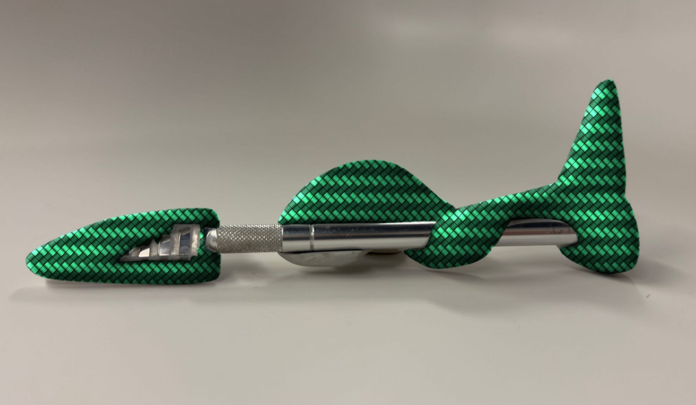
Anti-roll finIntegrated safety capFits pen, pencil & bladeScope
A single ergonomic grip that fits a pen, pencil, crayon or X-Acto precision knife.
Goals
Reduce hand fatigue during repetitive, high-precision cutting. Give an everyday utilitarian tool a distinct visual identity.
General Approach
Refine the form through iterative sketching and physical prototyping, adding an anti-roll fin and an integrated safety cap for blade tools.
Audience
Design students, hobbyists and craft professionals who rely on X-Acto blades for long, detail-oriented work.
Repetitive cutting strains the hand.
Awkward wrist positions cause fatigue and higher injury rates. Poor grips increase strain, while ergonomic surfaces reduce fatigue and improve control.
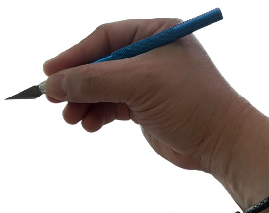
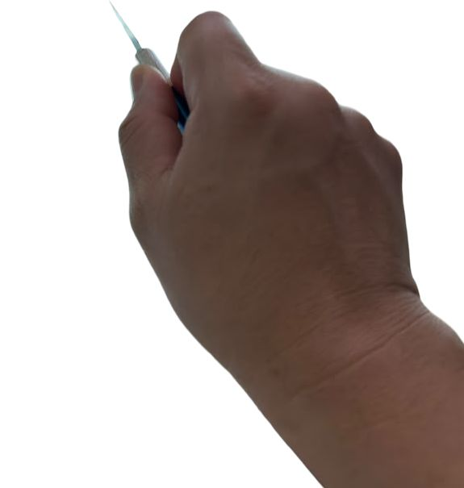
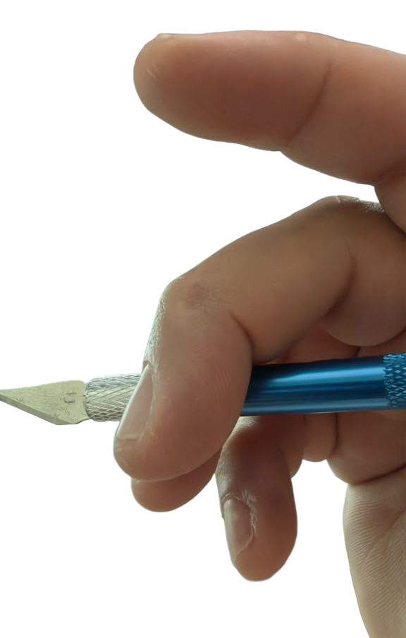
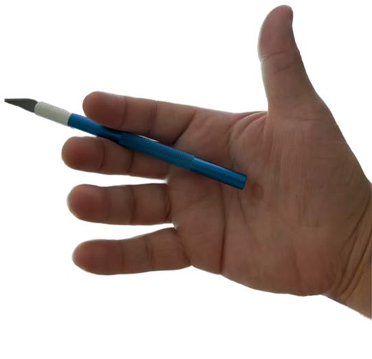
What grips get wrong today.
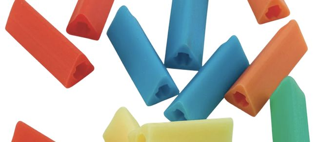
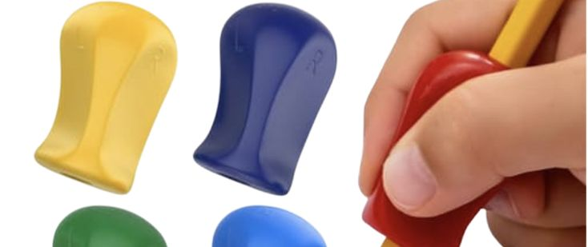
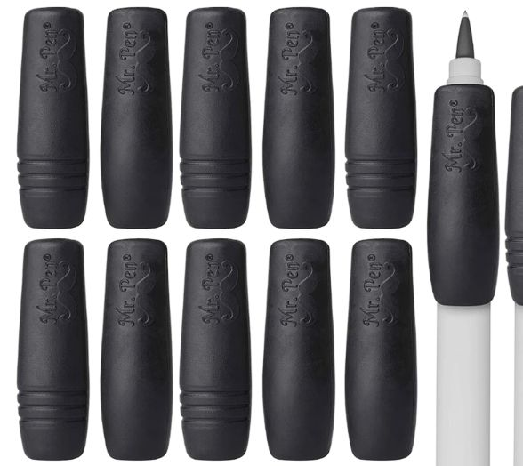
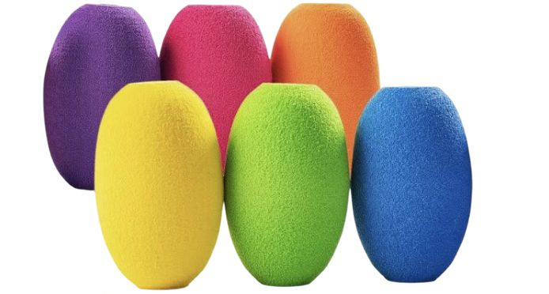
Ergonomics and aesthetics, together.
Exploring how ergonomics and aesthetics work together across different grips, in quick clay studies shaped around the hand.

From the average hand to the final form.
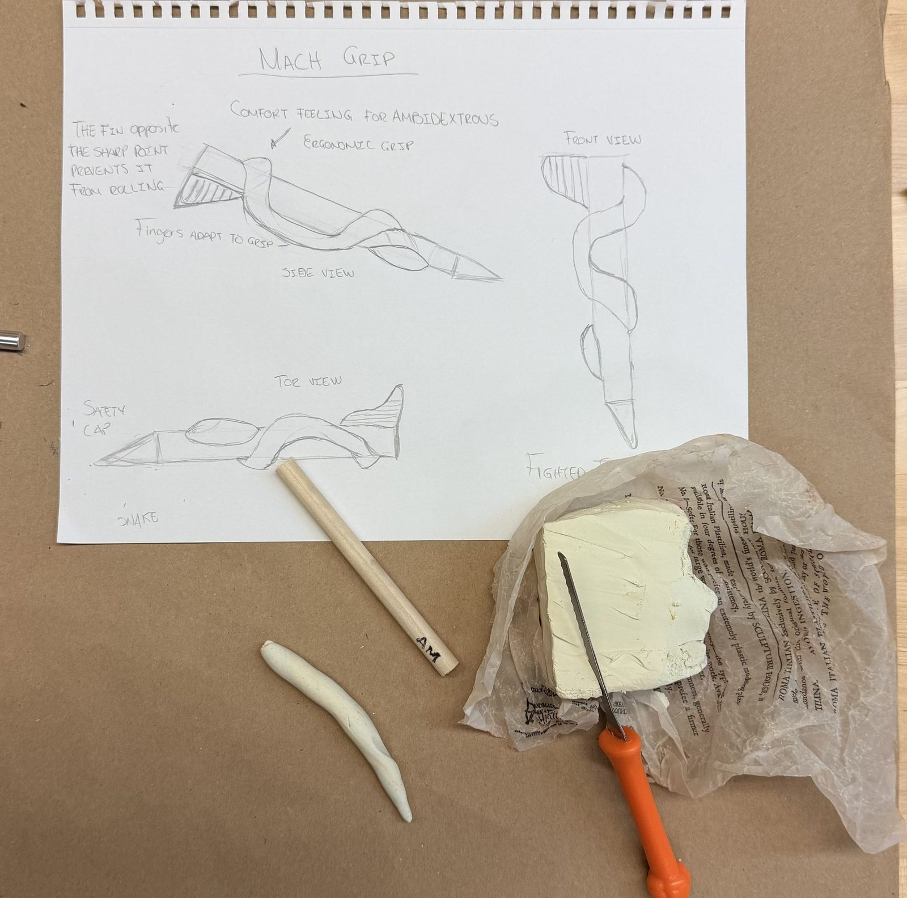
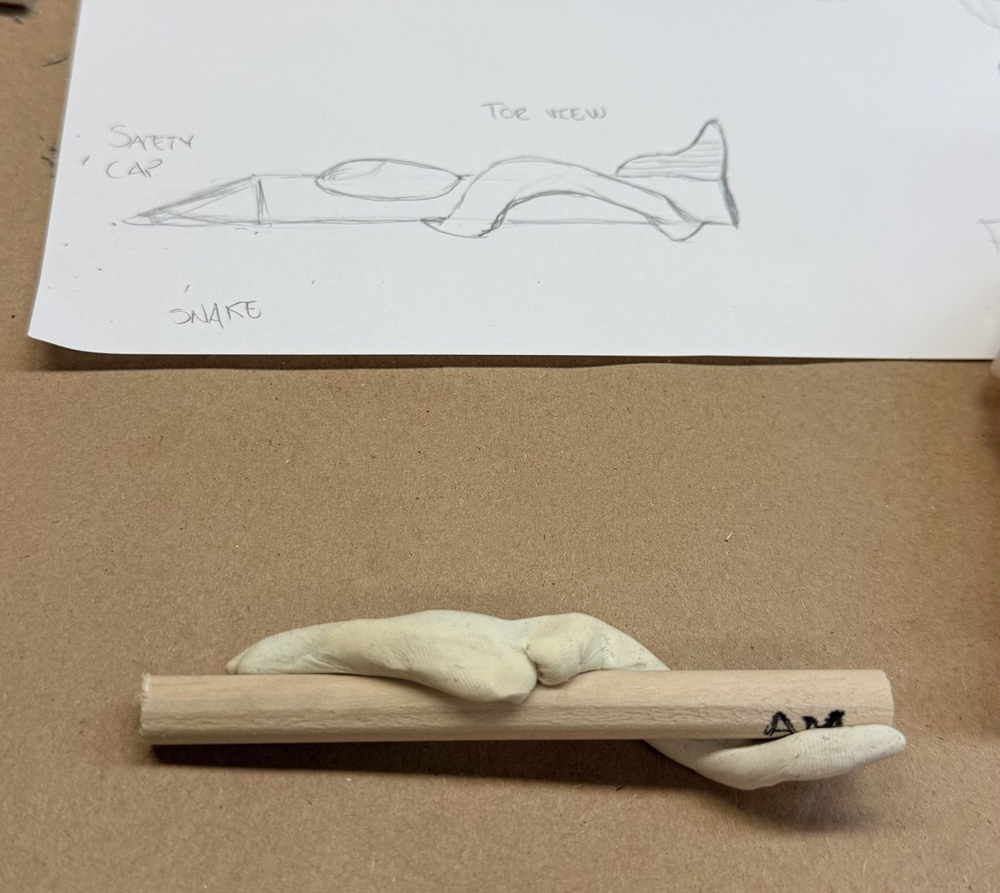
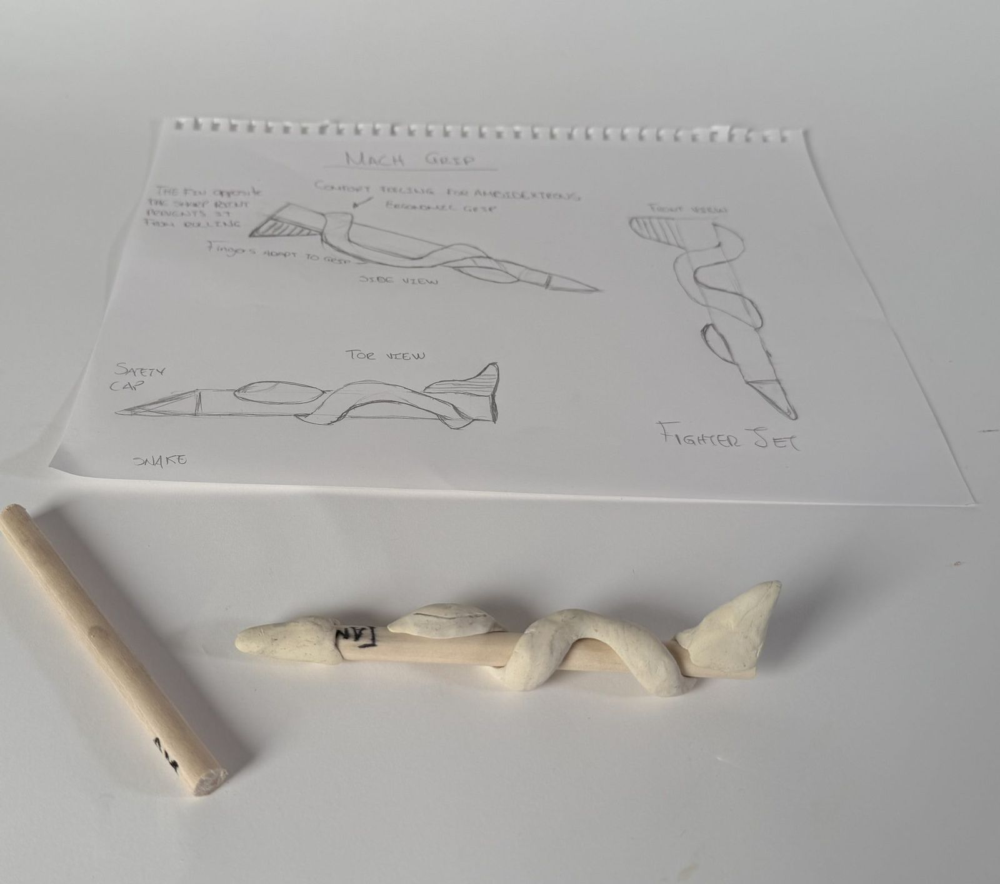
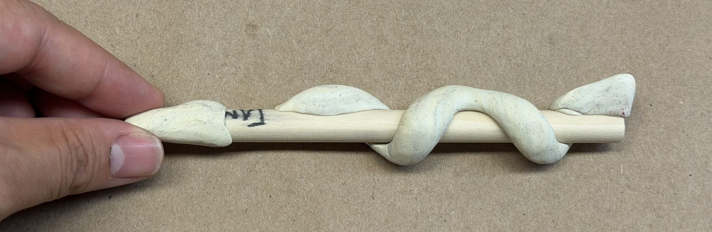
Refining the concept in hand.
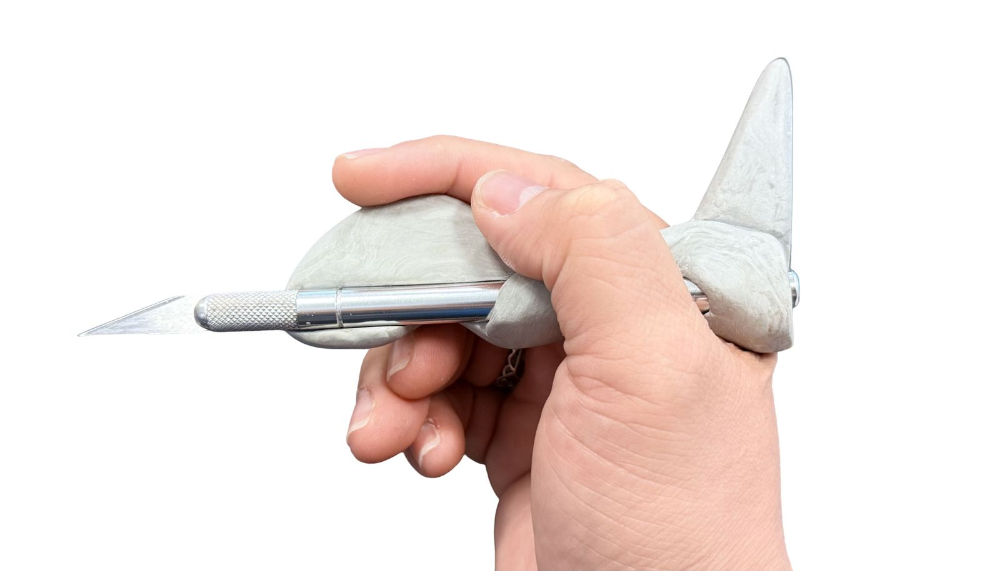
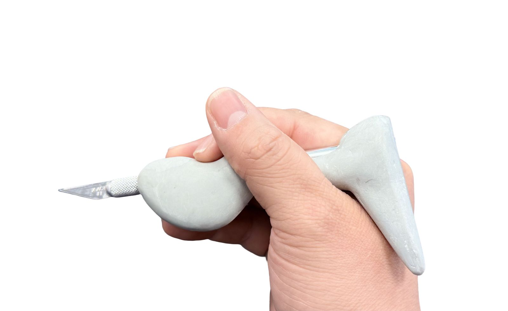
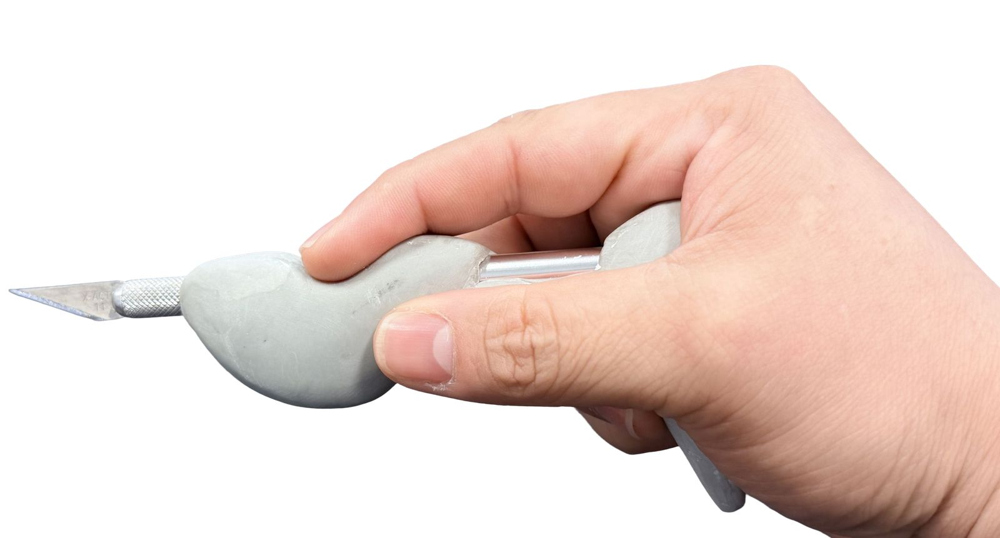
One grip family, three tools.
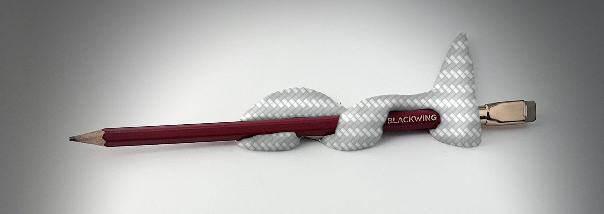
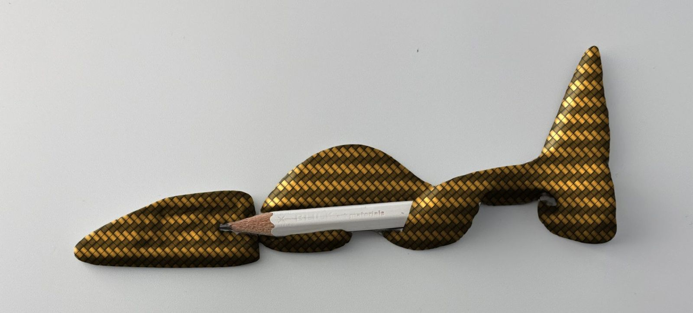
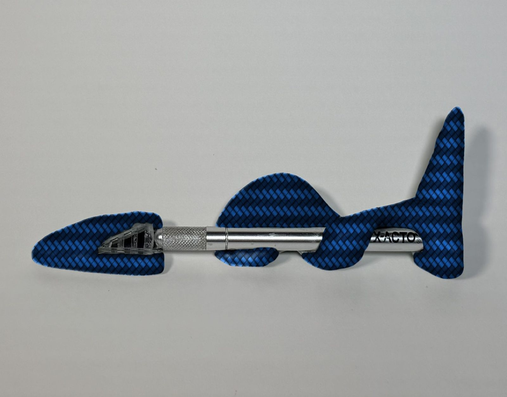